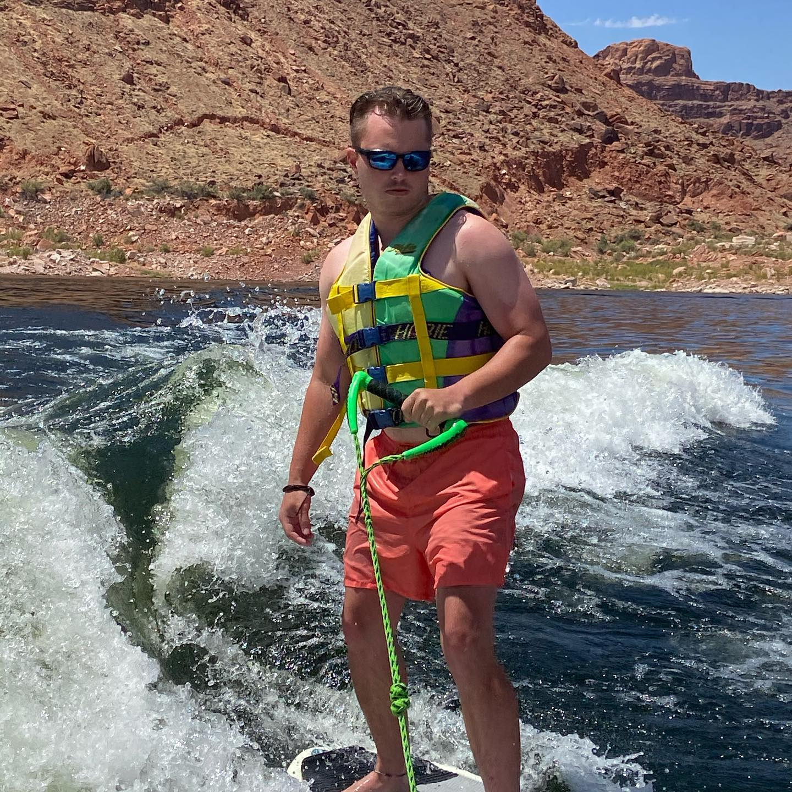
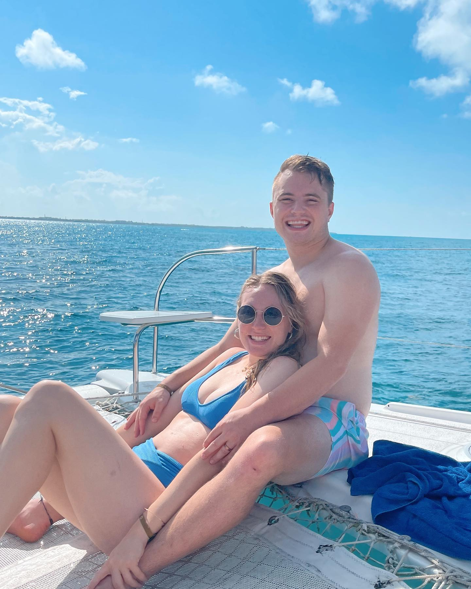

Hey there, I'm Steven! I was born and raised in Houston, TX (aka the greatest State on Earth!), and am a student at BYU currently studying Finance in the Marriott School of Business and am interested in working in private equity.
One of my hobbies I do here in college is play rugby for BYU. I also love to ski, work out, and hike as well (all of my favorite things about living in Utah). before coming to school I served a mission in Honduras for 2 years, and shortly afterwards met the Love of my life who I married a year later on July 15th, 2021!
I love the water! Below are some pictures of two of my favorite places: Lake powell and Cancun Mexico! (Click on the pictures below to find out more about them!)
 To go places and do things that have never been done before - that's what living is all about. Lake Powell Is one of my favorite places to travel! Click the picture above to find out more about the best place on Earth.  I married the love of my life Carissa in July of 2021. Life with her couldn't get any better! Click the image to see where we stayed in Mexico!